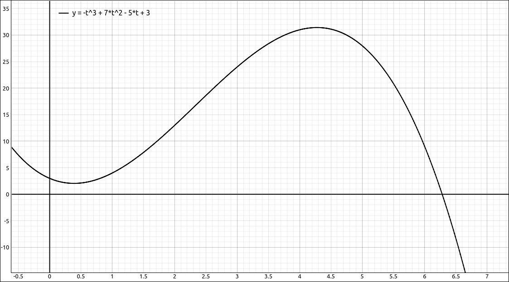
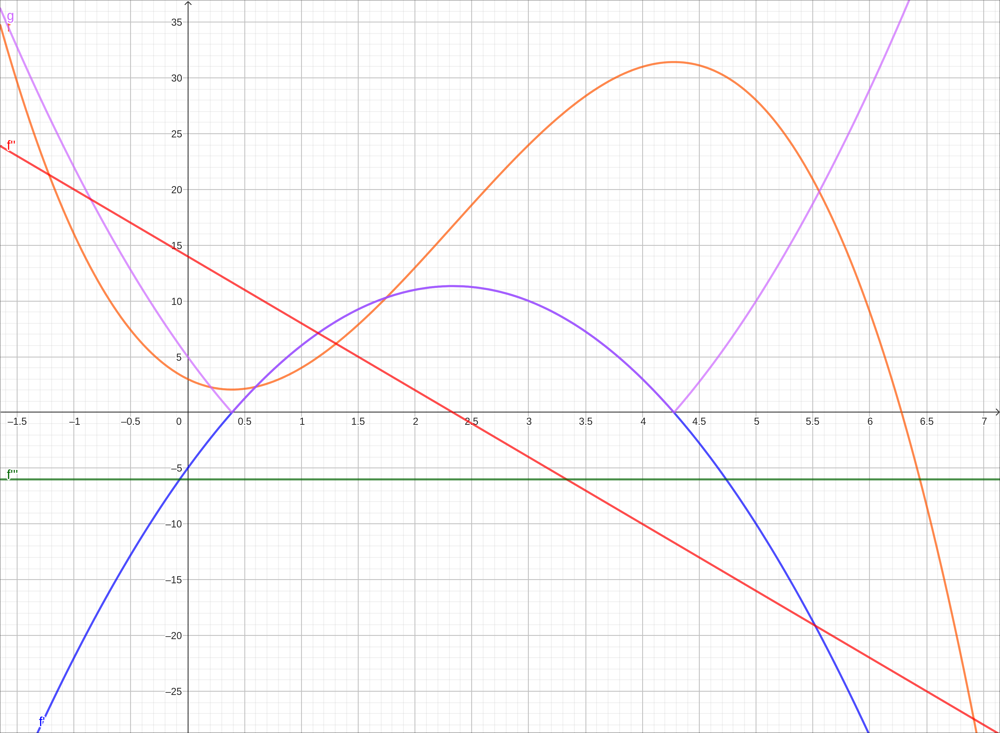
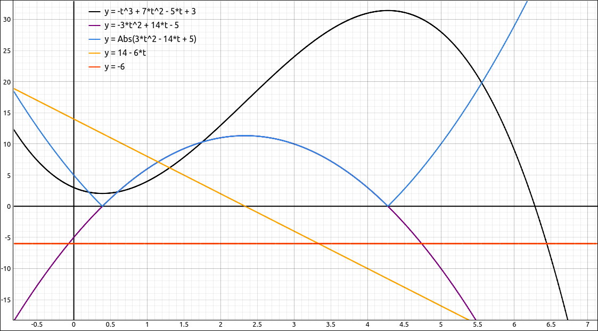
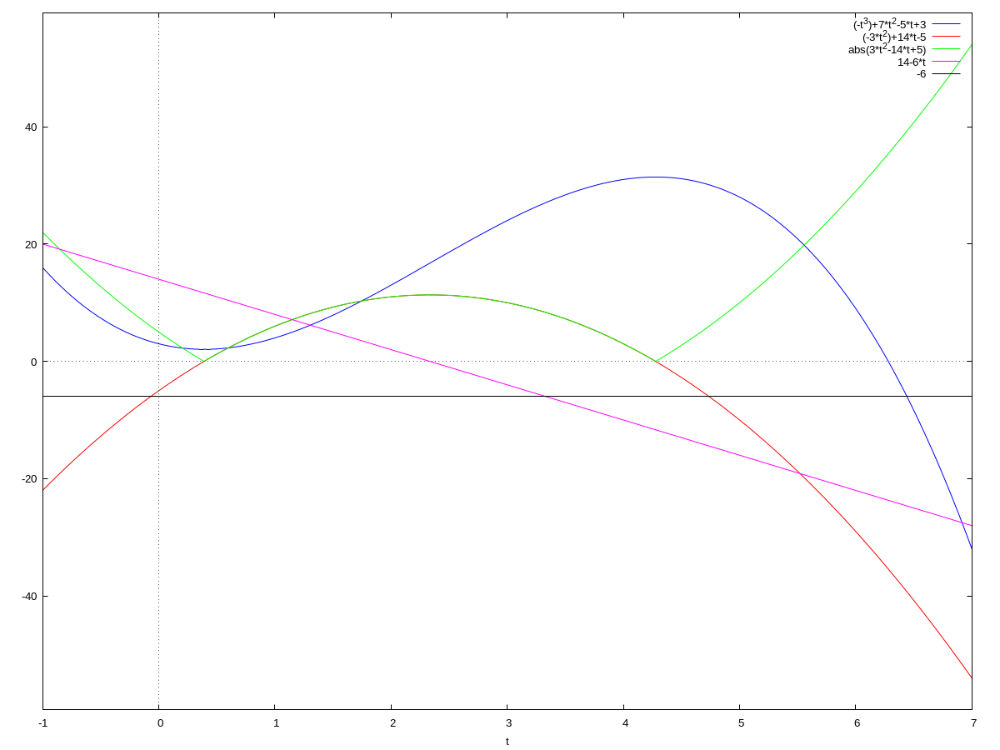
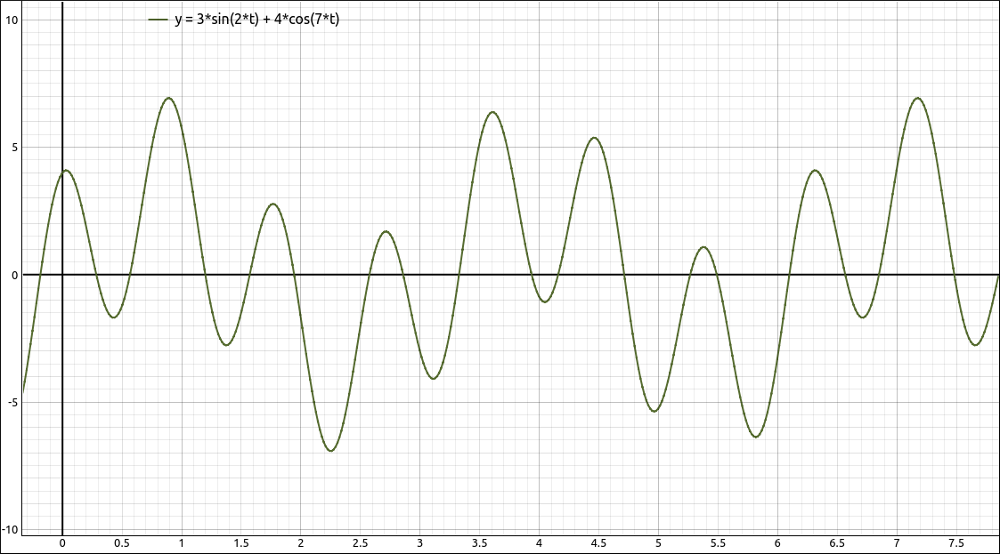
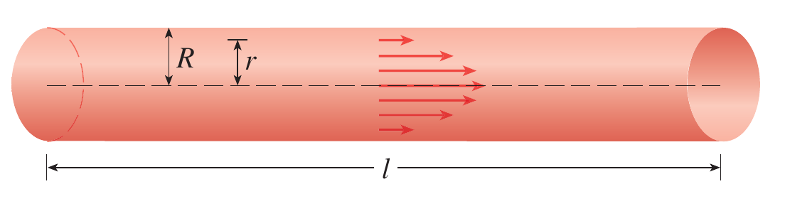
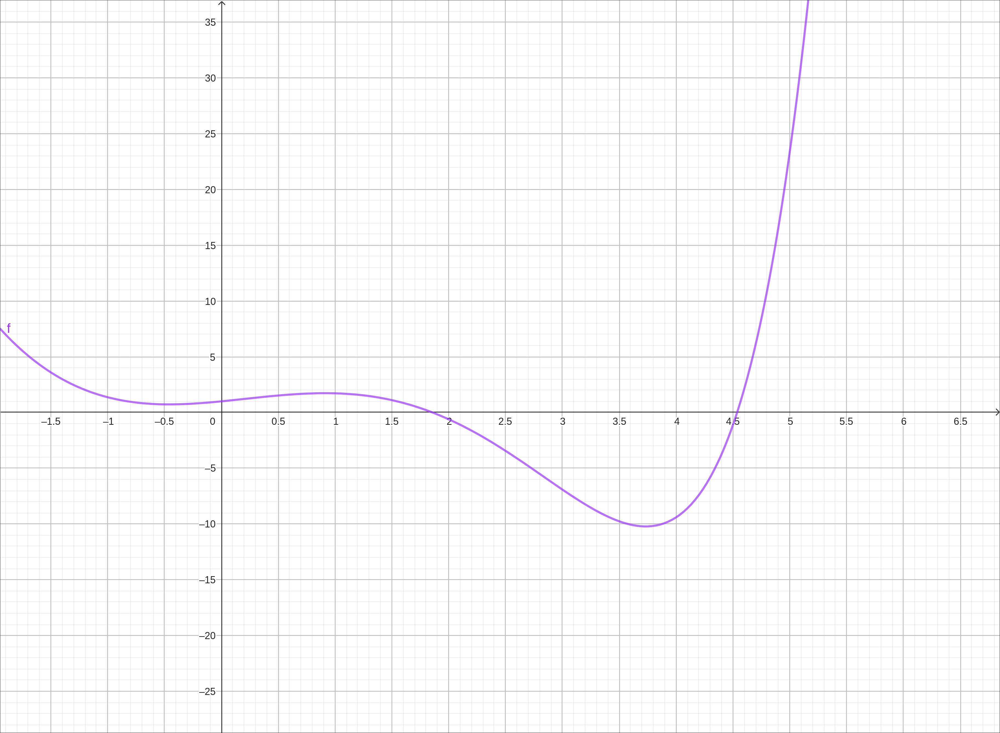
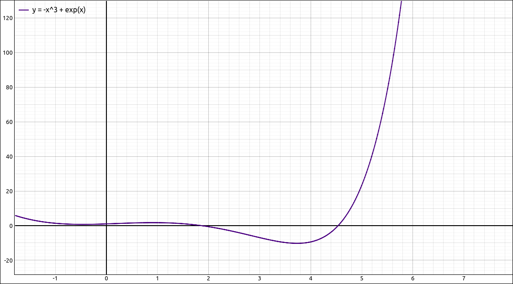

Rates of Change#
Discussion & Definitions#
As we stated in the introduction, Calculus is the study and quantification of change. In particular, Differential Calculus was developed around the solution to the Tangent Problem. The Tangent Problem was simply a geometrical interpretation for the more general and diverse concept of rates of change. Recapping the derivations,
Say we have a function \(f(x)\) that is defined on the interval \([a, a+h]\). The amount of change or total change of \(f(x)\) over the interval \([a, a+h]\) is \(f(a+h) - f(a)\). This is sometimes described as the change in y over the interval, and denoted as \(\Delta y = f(a+h) - f(a)\). Similarly, the length of the interval (which is h) is denoted as \(\Delta x\).
Definition: The Average Rate of Change
The average rate of change of the function \(f(x)\) over the interval \([a, a+h]\) is the ratio of the y change over the x change, specifically,
Definition: The Instantaneous Rate of Change
The instantaneous rate of change of \(f(x)\) at \(x = a\) is the derivative at a, in other words, the limit as \(h = \Delta x\) approaches 0,
Let’s take this one step further. If the function does have a derivative at \(x = a\) then the limit
must exist. If this limit exists then as h gets smaller the value of
gets closer to \(f'(a)\). So for small h we have,
and as a result,
We will exploit this several times in the derivative applications.
Velocity, Speed, Acceleration, and Jerks#
Let \(s(t)\) be a function giving the position of an object at time \(t\).
The Velocity of the object at time t is the derivative of the position function, \(v(t) = s'(t)\).
The Speed of the object at time t is the absolute value of the velocity function, \(|v(t)|\).
The Acceleration of the object at t is the derivative of the velocity function and hence the second derivative of the position function, \(a(t) = v'(t) = s''(t)\).
The Jerk of the object at t is the derivative of the acceleration function, \(j(t) = a'(t) = v''(t) = s'''(t)\):
Example: \(s(t) = - t^{3} + 7 t^{2} - 5 t + 3\)#
For example, say the position of a particle at time t was \(s(t) = - t^{3} + 7 t^{2} - 5 t + 3\). We will assume that time t is in seconds and the distance is in meters. The graph of this function is below.

\(s(t) = - t^{3} + 7 t^{2} - 5 t + 3\)#
So the particle starts out at \(t = 0\) at a position of 3 meters, it travels in a straight line backwards for about 0.5 seconds to about 2 meters, then forward until about 4.25 seconds at about 31 meters and then starts traveling backward again. Find the velocity, speed, acceleration, and jerk functions for this particle.
GeoGebra#
Input the function, GeoGebra likes to have the independent variable to be x so we will input,
- x^3 + 7 x^2 - 5 x + 3
We will assume that the function cam in as \(f(x)\).
In a new cell input,
f'
This is the velocity function. Now input
|f'|
This is the speed function. Now input
f''
This is the acceleration function. Now input
f'''
This is the jerk function. The graphs of all of them are below. The orange line is the position, the blue line is the velocity, the purple line is the speed, the red line is the acceleration, and the green line is the jerk.

\(s(t) = - t^{3} + 7 t^{2} - 5 t + 3\) with Derivatives#
CLAE#
Input the function,
- t^3 + 7*t^2 - 5*t + 3
Select this expression and select Calculus > Derivative, variable is t, order 1. The result should be,
This is the velocity function, assume it came in as R2. In the CAS input bar type in,
abs(R2)
The result should be,
This is the speed function. Select the velocity function and select Calculus > Derivative, variable is t, order 1. The result should be,
This is the acceleration function. Select the acceleration function and select Calculus > Derivative, variable is t, order 1. The result should be,
The graphs of all of them are below. The black line is the position, the purple line is the velocity, the blue line is the speed, the orange line is the acceleration, and the red line is the jerk.

\(s(t) = - t^{3} + 7 t^{2} - 5 t + 3\) with Derivatives#
Maxima#
Input the function,
s(t):=- t^3 + 7*t^2 - 5*t + 3
Now input,
v:diff(s(t),t,1)
The result should be,
This is the velocity function. Now input,
sp:abs(v);
The result should be,
This is the speed function. Now input,
a:diff(v,t,1);
The result should be,
This is the acceleration function. Now input,
j:diff(a,t,1);
The result should be,
This is the jerk function. We can graph all of these on the same plot with,
wxplot2d([s(t), v, sp, a, j], [t,-1,7])

\(s(t) = - t^{3} + 7 t^{2} - 5 t + 3\) with Derivatives#
Note
In Maxima the expressions v:, sp:, a:, and j: are assignment statements that are simply assigning the expression to the variables v, sp, a, and j. This makes it easier to include in other commands like the plot command. Note that this does not define v, sp, a, and j as function, so v(3) is not the velocity at 3 seconds. To create a function out of an expression we can use the '' operator, that is two single quotes next to each other. For example, once we have v as the derivative expression we can use,
vf(t):=''v
to define \(vf(t)\) as the velocity function. Then vf(3) returns 10, the velocity at 3 seconds.
Another note along these lines, you do not want to input vf(t):=''diff(s(t),t,1). It will not evaluate the derivative before assigning it to \(vf(t)\), do the expression first and then the assignment to the function,
v:diff(s(t),t,1);
vf(t):=''v
Example: \(s(t) = 3 \sin{\left(2 t \right)} + 4 \cos{\left(7 t \right)}\)#
Oscillatory motion is when the position of an object repeats itself. For example, a weight that is attached to a spring, the motion of an engine piston, etc. This example examines the motion defined by the function,
A graph of the position of the object is below.

\(s(t) = 3 \sin{\left(2 t \right)} + 4 \cos{\left(7 t \right)}\)#
Use the procedures from the first example to find the velocity, speed, acceleration, and jerk functions for this object. Your results should be, respectively,
Marginal Cost, Revenue and Profit#
Derivatives are also useful in business and economics for analyzing changes in cost, revenue, and profit.
If \(C(x)\) is the cost of producing x items, then the marginal cost \(MC(x)\) is \(MC(x) = C'(x)\).
If \(R(x)\) is the revenue obtained from selling x items, then the marginal revenue \(MR(x)\) is \(MR(x) = R'(x)\).
If \(P(x) = R(x) - C(x)\) is the profit obtained from selling x items, then the marginal profit \(MP(x)\) is defined to be \(MP(x) = P'(x) = MR(x) - MC(x) = R'(x) - C'(x)\).
Marginal cost, revenue, and profit are thought of as the cost, revenue, and profit that is obtained by the production and sell of one more item. Here is how we arrive at that interpretation. We will look at the marginal cost, the revenue and profit are similar. The marginal cost is,
We also know that if h is small then
Although \(h = 1\) is not very small it is reasonably small, substituting gives us,
which is the cost of producing one more item.
Example#
Suppose that the profit obtained from the sale of x items is given by \(P(x) = -0.03x^2 + 8x - 50\). Use the marginal profit function to estimate the profit from the sale of the 101st item.
GeoGebra#
Input the function,
-0.03x^2 + 8x - 50
to find the marginal profet function input f', the result should be \(-0.06x+8\). The estimate of the profit for the 101st item is f'(100) which should return 2.
CLAE#
Input the function,
-0.03*x^2+8*x-50
To find the marginal profit function take the derivative with Calculus > Derivative, variable x and order 1. The result should be, \(8 - 0.06 x\). So for the 101st item, select Algebra > Evaluate, variable x and expression 100, resulting in 2.
Maxima#
Input the function,
p(x):=-0.03*x^2+8*x-50
To find the marginal profit function take the derivative with,
mp:diff(p(x),x)
The result should be, \(8 - 0.06 x\). Turn the expression into a function,
mpf(x):=''mp
Evaluate the function at 100,
mpf(100)
The result should be 2.0.
Laminar Flow#
The flow of water (or any liquid) through a pipe is not all at the same velocity. Due to friction with the pipe the water along the central axis of the pipe flows faster than the water close to the walls of the pipe.

Laminar Flow Visualization#
If we have a length of pipe l with radius R then the law of laminar flow states,
where \(\eta\) is the viscosity of the liquid and P is the pressure difference between the two ends of the pipe. If P and l are constant, as would be R and \(\eta\), then the velocity v is a function of the distance r the stream is away from the central axis of the pipe. The domain of the function would be \([0, R]\).
The velocity gradient is the instantaneous rate of change of velocity with respect to r, \(v'(r)\).
CLAE#
Input the function,
P/(4*n*l)*(R^2-r^2)
Then for the velocity gradient function select Calculus > Derivative, r is the variable and order 1 gives the expression.
Maxima#
Input the function,
kill(all);
v(r):=P/(4*n*l)*(R^2-r^2)
Then for the velocity gradient function input,
diff(v(r),r)
and the result is the expression.
Sensitivity to Change#
When a small change in x produces a large change in the value of a function \(f(x)\), we say that the function is relatively sensitive to changes in x. The derivative \(f'(x)\) is a measure of sensitivity. If a function is sensitivity then small x changed will create large y changes, which means that the a tangent line will have a large slope, either positively of negatively. Hence the derivative will have a large absolute value if the function is sensitive at that point.
Example: \(f(x) = e^x - x^3\)#
GeoGebra#
Input the function,
e^x - x^3

\(f(x) = e^x - x^3\)#
The sensitivity of this function at 2 is f'(2) which returns \(-4.61094\) and the sensitivity of this function at 5 is f'(5) which returns \(73.41316\). So the function is more sensitive at 5 than at 2.
CLAE#
Input the function,
E^x - x^3
Take its derivative with Calculus > Derivative, variable x, order 1, result is, \(- 3 x^{2} + e^{x}\). Now evaluate it at both 2 and 5, results are \(-12 + e^{2} \approx -4.61094390106935\) and \(-75 + e^{5} \approx 73.4131591025766\), respectively. So the function is more sensitive at 5 than at 2.

\(f(x) = e^x - x^3\)#
Maxima#
Input the function,
kill(all);
f(x):=%e^x - x^3
Take the derivative, we will store the result as s,
s:diff(f(x),x)
Turn it into a function with,
sen(x):=''s
Calculate the sensitivity at 2 (and approximate it as well) with,
sen(2);
float(%), numer;
The result is \(-12 + e^{2} \approx -4.61094390106935\). Doing the same at 5,
sen(5);
float(%), numer;
results in \(-75 + e^{5} \approx 73.4131591025766\). So the function is more sensitive at 5 than at 2.
Note
These examples are only scratching the surface. In addition to our examples above, rates of reactions in chemistry, current, linear density, rate of the spread of fires, rate of heat flow, rate of improvement of performance in psychology, rate of spread of a rumor in sociology, and the list goes on. These are all specific examples of the general concept of a derivative.
The French mathematician Joseph Fourier (1768-1830) once said: “Mathematics compares the most diverse phenomena and discovers the secret analogies that unite them.”